Wstęp
Na sam początek
0. Pobierz arkusz i pliki z egzaminzawodowy.info
1. Utwórz folder na pulpicie ze swoim numerem zdającego (tutaj "00000000000")
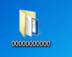
2. Rozpakuj archiwum pliki2.7z do swojego folderu
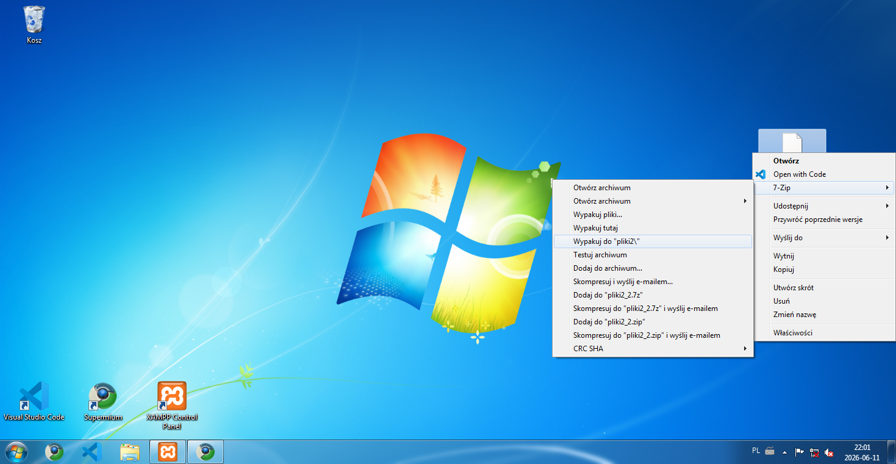
Pliki są zabezpieczone hasłem: ^WolonTari@t
3. Uruchom XAMPP, a w nim uruchom usługi Apache oraz MySQL
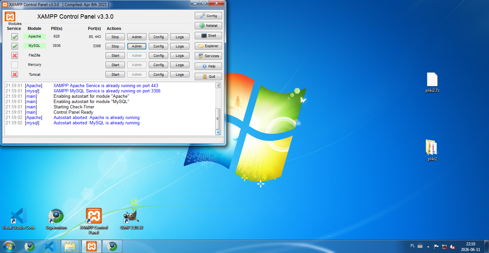
Bazy danych
Stworzenie bazy danych i import danych
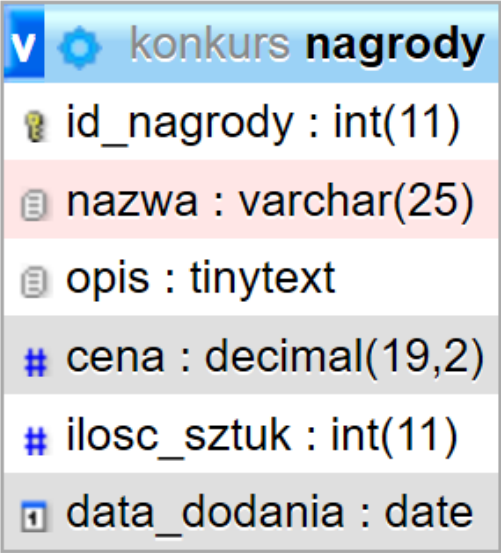
− Utwórz bazę danych o nazwie konkurs, z zestawem polskich znaków (np. utf8_unicode_ci)
− Z rozpakowanego archiwum zaimportuj tabelę z pliku baza.sql do utworzonej bazy
− Wykonaj zrzut ekranu po imporcie. Zapisz zrzut w formacie PNG pod nazwą import. Nie kadruj zrzutu. Powinien on obejmować cały ekran monitora, z widocznym paskiem zadań. Na zrzucie powinny być widoczne elementy wskazujące na poprawnie wykonany import tabel
Tworzenie bazy danych
1. Uruchom przeglądarkę i przejdź do: http://localhost/phpmyadmin (lub w XAMPP przyciśnij w MySQL)
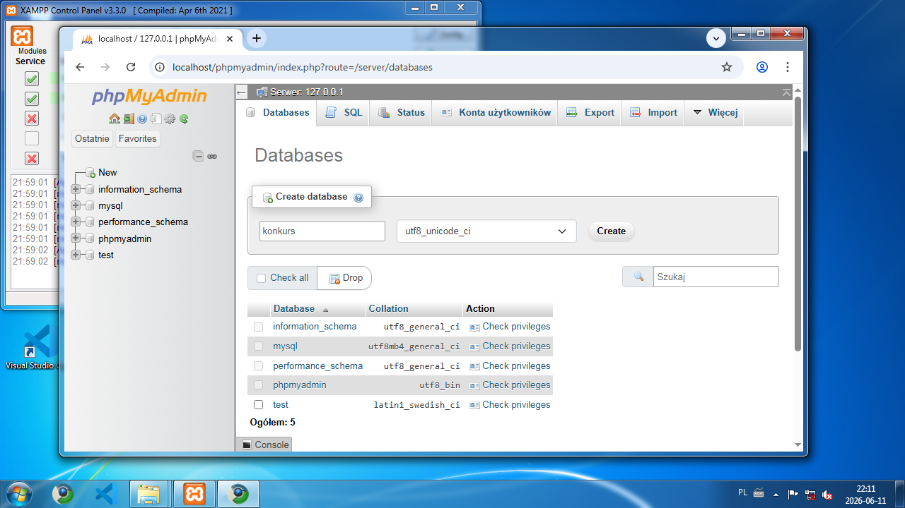
2. Kliknij link New
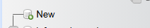
3. Wpisz nazwę "konkurs" oraz wybierz kodowanie znaków utf8_unicode_ci
Następnie utwórz bazę za pomocą przycisku
4. W swojej nowej bazie danych przejdź do zakładki import, wybierz plik do importowania (baza.sql) i potwierdź na samym dole strony
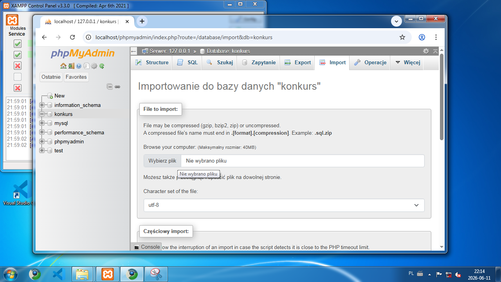
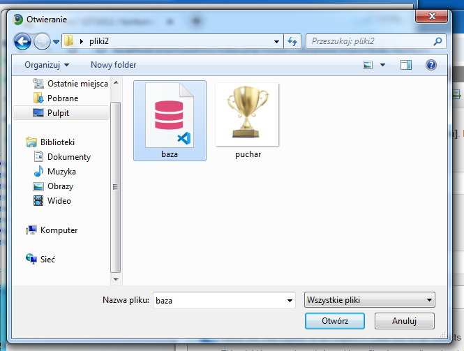
Właśnie stworzyłeś i zaimportowałeś bazę danych!
5. Zrób zrzut całego ekranu, zapisz go w swoim folderze pod nazwą import.png
Pasek zadań też musi być widoczny!
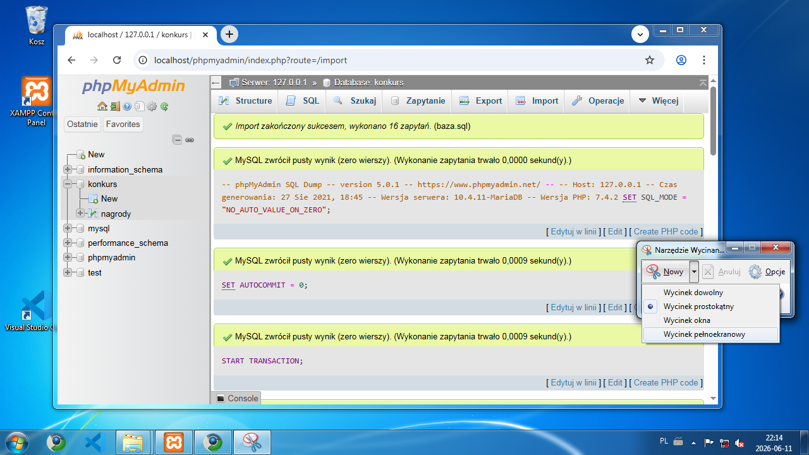
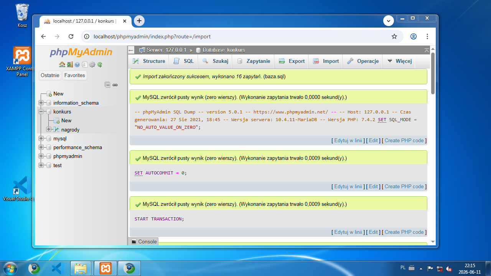
Zapytania
− Wykonaj zapytania SQL działające na bazie konkurs. Zapytania zapisz w pliku kwerendy.txt. Wykonaj zrzuty ekranu przedstawiające wyniki działania kwerend. Zrzuty zapisz w formacie PNG i nadaj im nazwy kw1, kw2, kw3, kw4. Zrzuty powinny obejmować cały ekran monitora z widocznym paskiem zadań
− Zapytanie 1: wybierające losowo dokładnie pięć rekordów z tabeli nagrody zawierających jedynie pola nazwa, opis i cena
− Zapytanie 2: wybierające wszystkie pola z tabeli nagrody, dla których cena mieści się w przedziale <100, 1000>, oraz których ilość jest równa 2 sztuki
− Zapytanie 3: usuwające te rekordy, w których cena nie została wpisana lub wynosi 0 zł
− Zapytanie 4: wybierające jedynie nazwę, cenę i datę dodania nagród, które zostały dodane w sierpniu 2021 roku. Wyniki powinny być posortowane rosnąco według daty
1. W swojej bazie danych "konkurs" przejdź do zakładki SQL (lub Zapytanie):
2. W oknie zapytań wpisz odpowiednie kwerendy, zrób Screenshoty całego ekranu (nazywając je kw(nr.kwerendy).png), i zapisz w swoim folderze
Zapisz każdą kwerendę w pliku kwerendy.txt w swoim folderze
SELECT nazwa, opis, cena FROM nagrody ORDER BY RAND() LIMIT 5;
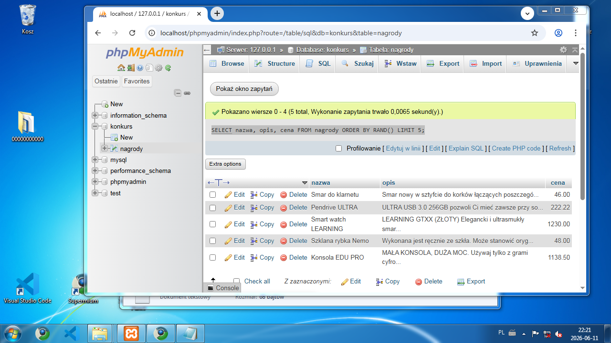
SELECT nazwa, opis, cena FROM nagrody ORDER BY RAND() LIMIT 5;
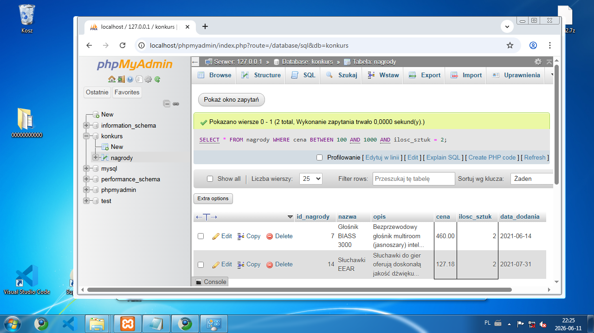
SELECT nazwa, opis, cena FROM nagrody ORDER BY RAND() LIMIT 5;
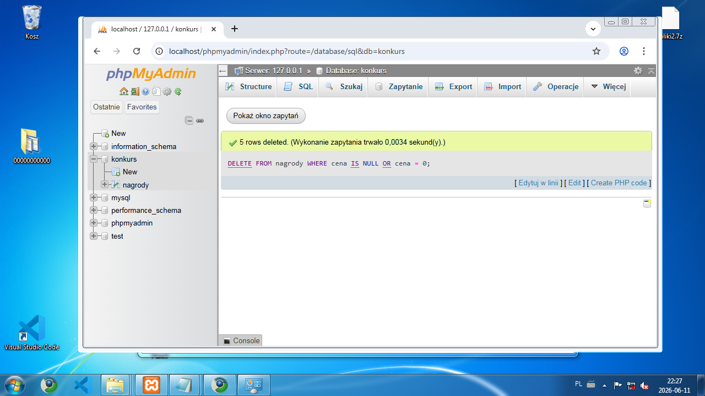
SELECT nazwa, opis, cena FROM nagrody ORDER BY RAND() LIMIT 5;
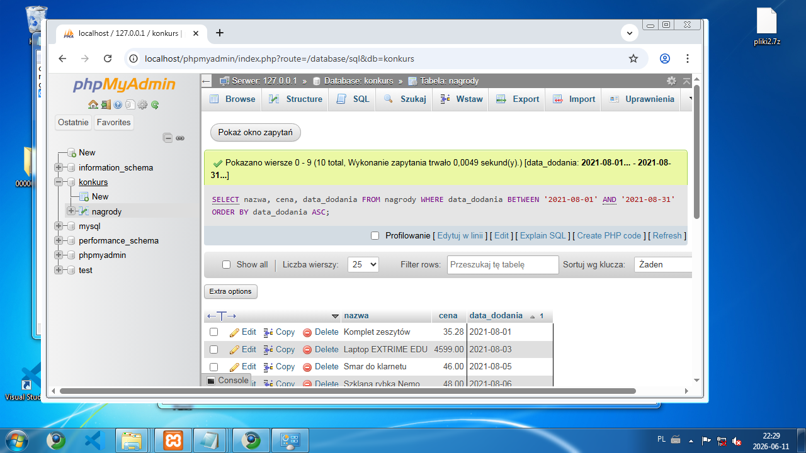
Witryna internetowa
Chechy grafiki:
− Nazwa pliku puchar.png
− Tło przezroczyste
− Puchar rzuca cień przesunięty jednocześnie w prawo i w dół
− Przeskalowana do rozmiaru 260 px na 260 px
Grafika
1. Otwórz plik puchar.bmp za pomocą programu graficznego GIMP
2. Narzędziem Różdzka zaznacz białe tło
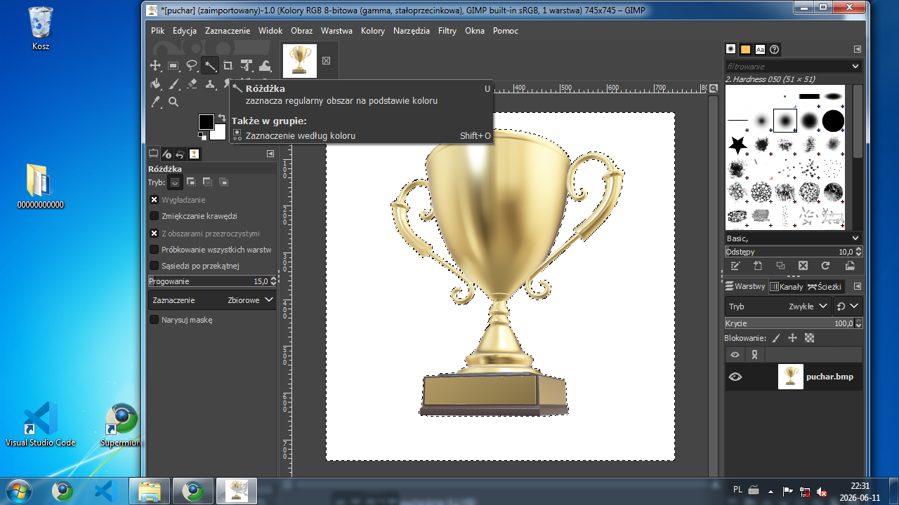
3. W pasku menu wybierz Zanaczenie > Odwróć
4. Skopiuj puchar (CTRL + C), i następnie go wklej jako nowa warstwa. Usuń poprzednią warstwę z tłem.
Twój puchar ma przeźroczyste tło!
5. Wybierz warstwę z pucharem, w pasku menu wybierz Filtry > Światło i cień > Rzucanie cienia
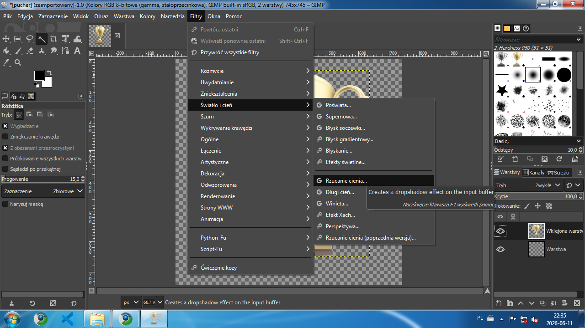
6. Dostosuj efekt i potwierdź przyciskiem
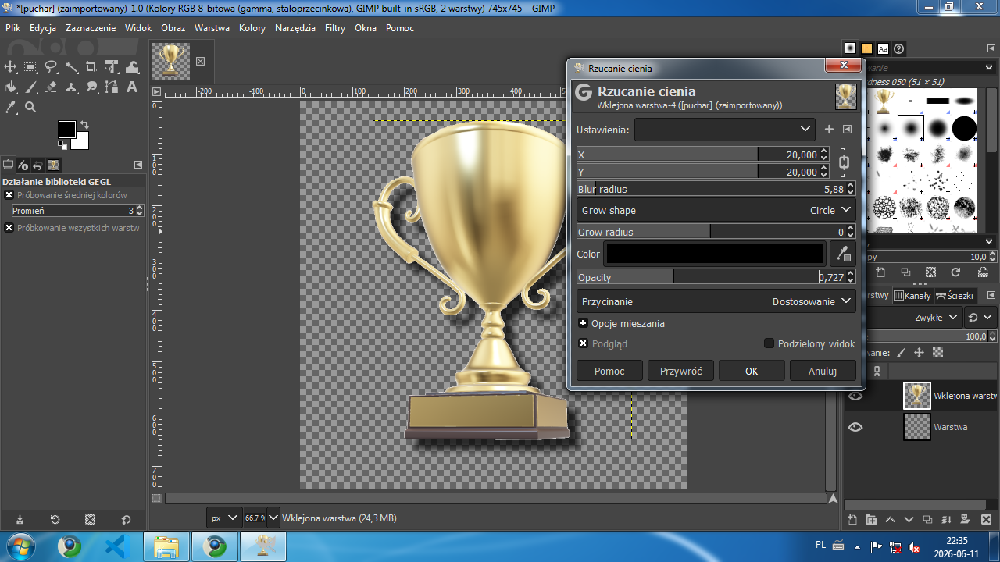
7. Żeby przeskalować obraz wybierz Obraz > Skaluj obraz
8. Zmień Szerokość i Wysokość na 260px i zatwierdź przyciskiem
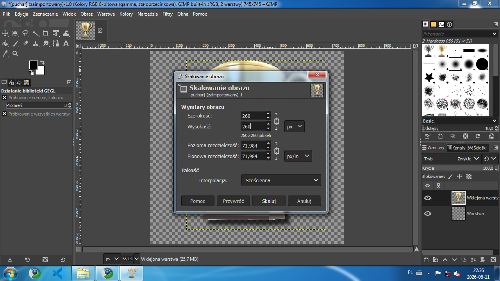
9. Wybierz Plik > Wyeksportuj jako, zapisz jako puchar.png
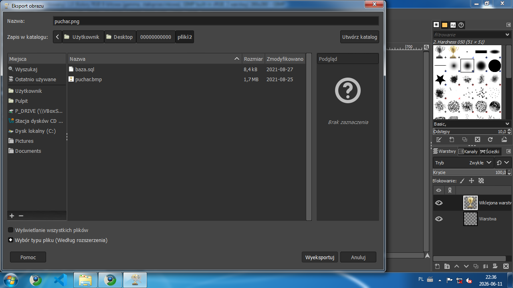
Twoja grafika jest gotowa!
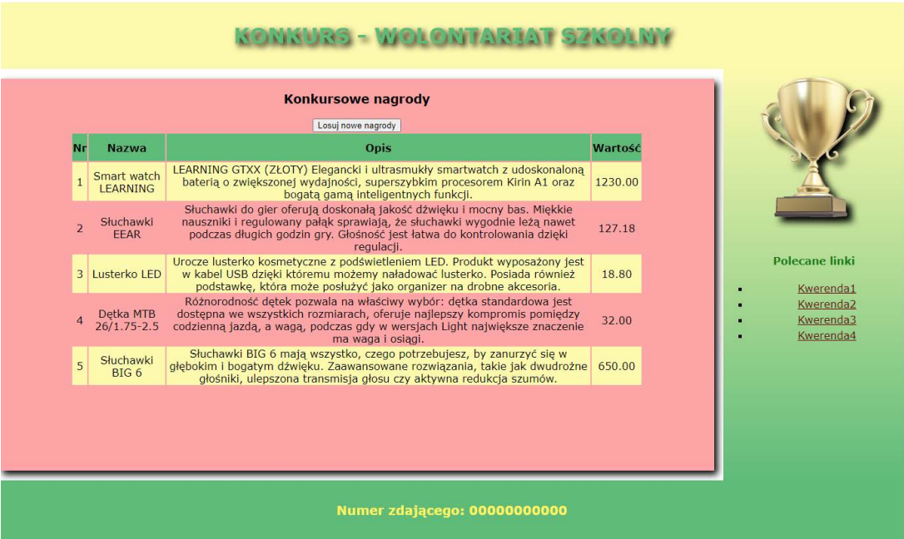
Cechy witryny:
− Składa się ze strony o nazwie konkurs.php
− Zapisana w języku HTML5
− Zadeklarowany polski język zawartości witryny
− Jawnie zastosowany właściwy standard kodowania polskich znaków
− Tytuł strony „WOLONTARIAT SZKOLNY” widoczny na karcie przeglądarki
− Arkusz stylów w pliku o nazwie styles.css prawidłowo połączony z kodem strony
− Podział strony na bloki: nagłówkowy, poniżej lewy i prawy, na dole blok stopki. Podział zrealizowany za pomocą semantycznych znaczników sekcji języka HTML5 tak, aby po uruchomieniu w przeglądarce wygląd układu bloków był zgodny z ilustracją 2
− Zawartość bloku nagłówkowego:
− Nagłówek pierwszego stopnia o treści: „KONKURS - WOLONTARIAT SZKOLNY”
− Zawartość bloku lewego:
− Nagłówek trzeciego stopnia o treści: „Konkursowe nagrody”
− Przycisk o treści „Losuj nowe nagrody”, jego wybranie przeładowuje stronę
− Tabela o czterech kolumnach, z wierszem nagłówkowym o komórkach: „Nr”, „Nazwa”, „Opis”, „Wartość”. Wypełniona przez skrypt
− Zawartość bloku prawego:
− Grafika puchar.png z tekstem alternatywnym o treści: „Puchar dla wolontariusza”
− Nagłówek czwartego stopnia o treści: „Polecane linki”
− Lista punktowana (nieuporządkowana), której poszczególne elementy: „Kwerenda1”, „Kwerenda2”, „Kwerenda3”, „Kwerenda4” są odnośnikami do plików zawierających zrzuty ekranu wykonanych kwerend
− Zawartość stopki: paragraf o treści „Numer zdającego: ”, dalej wstawiony numer zdającego
Strona
1. Uruchom Visual Studio Code
2. Otwórz folder: C:\xampp\htdocs\
3. Utwórz nowy plik o nazwie konkurs.php
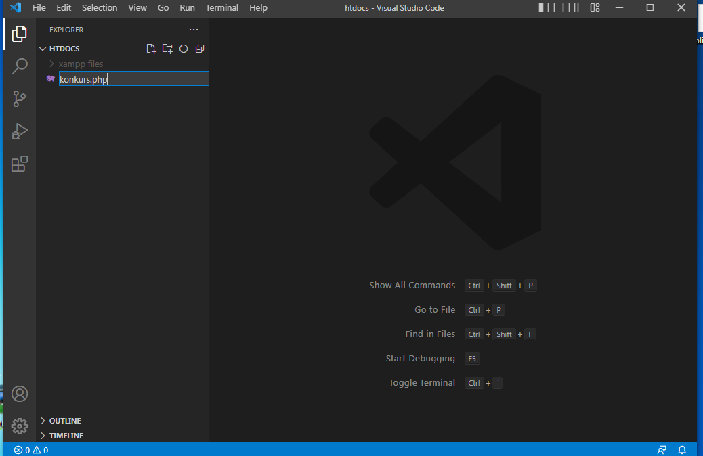
4. Aby zadeklarować HTML5 wpisz to w pierszej linijce, przed znacznikiem HTML
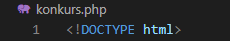
5. Żeby zadeklarować polski język zawartości dodajemy do znacznika HTML atrybut lang z wartością pl
Tytuł strony ustawiamy w znaczkiku TITLE w HEAD
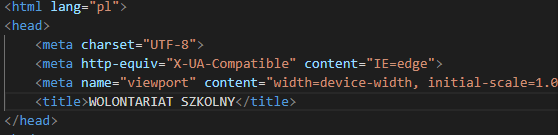
6. Blok nagłówkowy z nagłówkiem 1. stopnia:
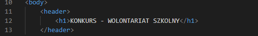
7. Blok lewy:
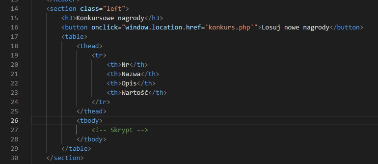
8. Blok prawy:
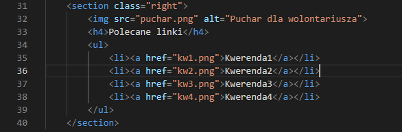
9. Stopka z paragrafem (zastąp 00000000000 swoim numerem zdającego)
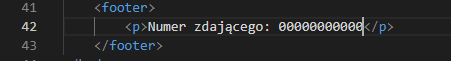
Skończyliśmy strukturę strony html!
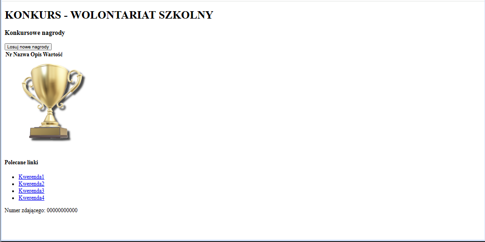
Styl CSS witryny internetowej
Styl CSS zdefiniowany jest w całości w zewnętrznym pliku o nazwie styles.css. W tabeli 2 zawarto pomoc do niektórych właściwości CSS. Cechy formatowania CSS, działające na stronie:
− Dla ciała strony: krój czcionki Verdana, wyrównanie tekstu do środka, marginesy wewnętrzne górny i dolny 0, prawy i lewy 3%
− Dla bloku nagłówkowego: kolor tła #FDFAAA, kolor czcionki #5BBB77, marginesy wewnętrzne 10 px, cień tekstu o cechach: przesunięcie w poziomie i pionie: 5 px, promień rozmycia: 10 px, czarny kolor cienia
− Dla bloku lewego: kolor tła #FFA6A6, szerokość 79%, wysokość 600 px, marginesy zewnętrzne górny i dolny 15 px, prawy i lewy 0, cień bloku o cechach: przesunięcie w poziomie 5 px, w pionie 6 px, promień rozmycia: 10 px, kolor czarny
− Dla bloku prawego: tło będące gradientem liniowym od koloru #FDFAAA do koloru #5BBB77, szerokość 20%, wysokość 630 px
− Dla bloku stopki: kolor tła #5BBB77, kolor czcionki #FFF555, czcionka pogrubiona w rozmiarze 120%, marginesy wewnętrzne 15 px
− Dla selektora tabeli: marginesy zewnętrzne automatycznie wyliczane przez przeglądarkę, szerokość: 80%
− Dla komórek nagłówkowych tabeli: kolor tła #5BBB77, rozmiar czcionki 16 px, wysokość komórki 40px
− Dla parzystych wierszy tabeli: kolor tła #FDFAAA
− Dla selektora listy punktowanej: typ punktora kwadrat, interlinia 1.5
− Dla selektora odnośnika: kolor czcionki #680808
− Dla selektora nagłówka czwartego stopnia: zielony kolor czcionki
Uwaga: styl CSS tabeli, listy punktowanej, odnośnika, nagłówka czwartego stopnia należy zdefiniować wyłącznie przy pomocy selektora tego znacznika. Jest to uwarunkowane projektem późniejszej rozbudowy witryny
CSS
Po przejściu przez plik styles.css tak wygląda nasza strona!
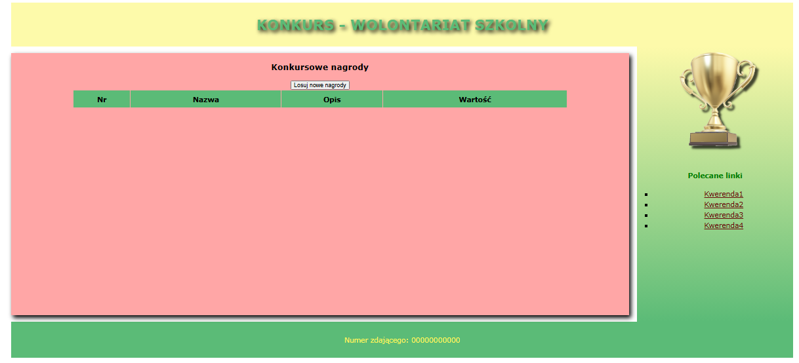
Skrypt połączenia z bazą
W tabeli 1 zamieszczono wybrane funkcje PHP do obsługi bazy danych. Wymagania dotyczące skryptu:
− Napisany w języku PHP
− Należy stosować znaczące nazewnictwo zmiennych i funkcji w języku polskim lub angielskim
− Łączy się z serwerem bazodanowym na localhost, użytkownik root bez hasła, baza danych o nazwie konkurs
− Wysyła do bazy danych zapytanie 1
− W każdym wierszu tabeli wpisywany jest obliczony przez skrypt kolejny numer wiersza począwszy od 1 oraz zwrócone zapytaniem pola kolejnego rekordu
− Na końcu zamykane jest połączenie z serwerem
PHP
1. Wracamy do konkurs.php
2. Na samym początku pliku robimy miejsce na skrypt połączenia z bazą danych:
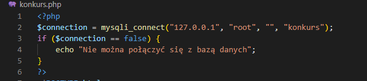
2. Na samym końcu pliku robimy miejsce na skrypt zamykania połączenia z bazą danych:
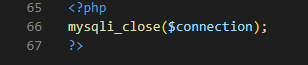
3. W znaczniku TBODY wstawiamy skrypt PHP używający kwerendę 1., który będzie tworzył 5 wierszy z uzupełnionymi danymi
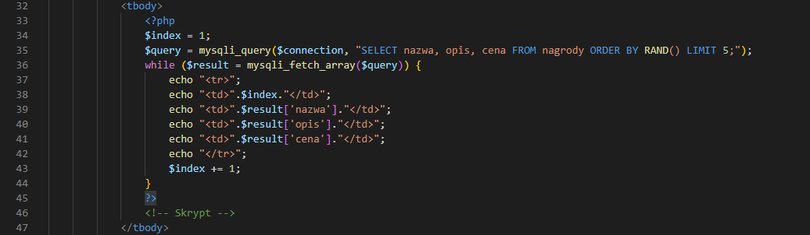
Strona została ukończona!
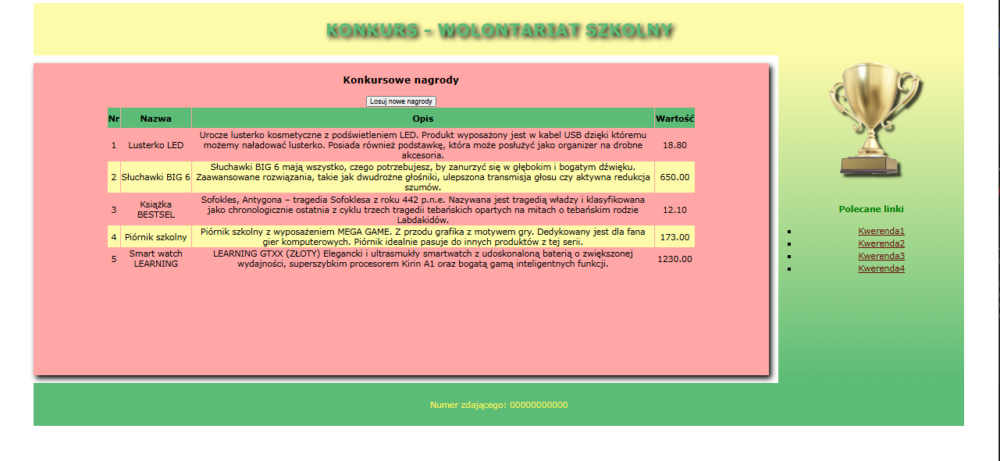
Koniec!
Teraz przenieś resztę danych według arkusza, zgraj na płytę/pendrive i przekaż egzaminatorowi!
Pobierz rozwiązanie...